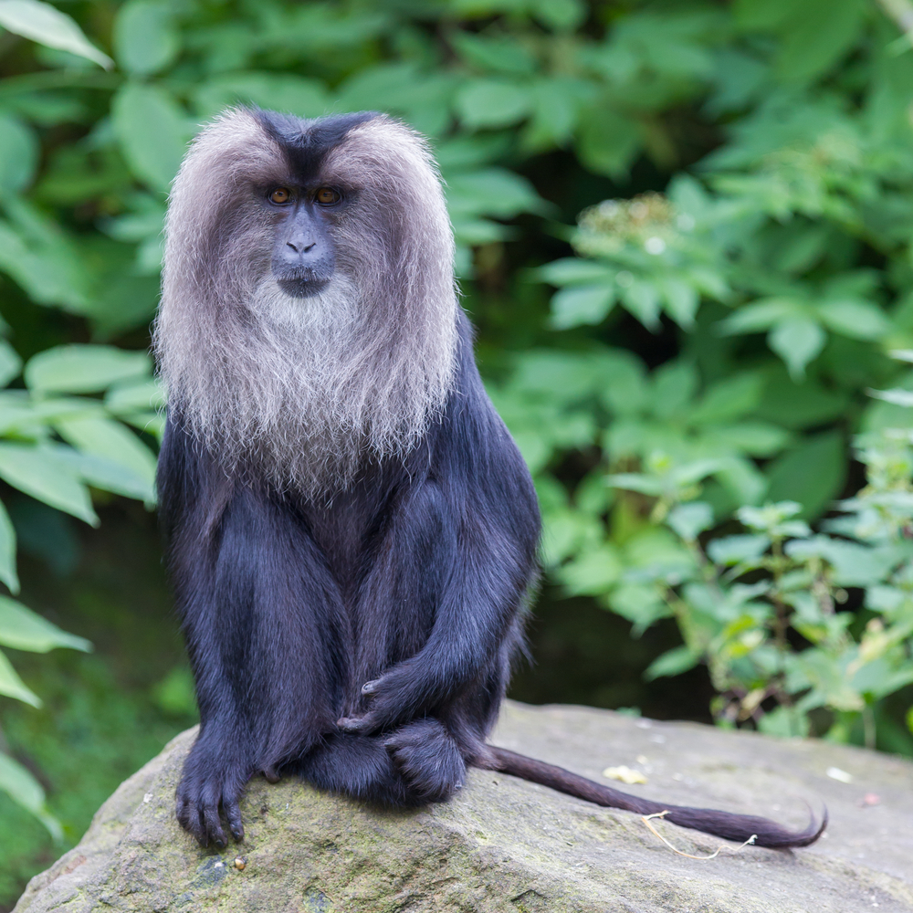

MACACO
Los terminos mono y simio son sinonimos en el idioma español, pero en la zoologia sule hacerce una distincion entre ambos,debido a la influenza del idioma del idioma ingles, en que los terminos equivalentes monkey y ape tienen diferentes significados.
Ver mas